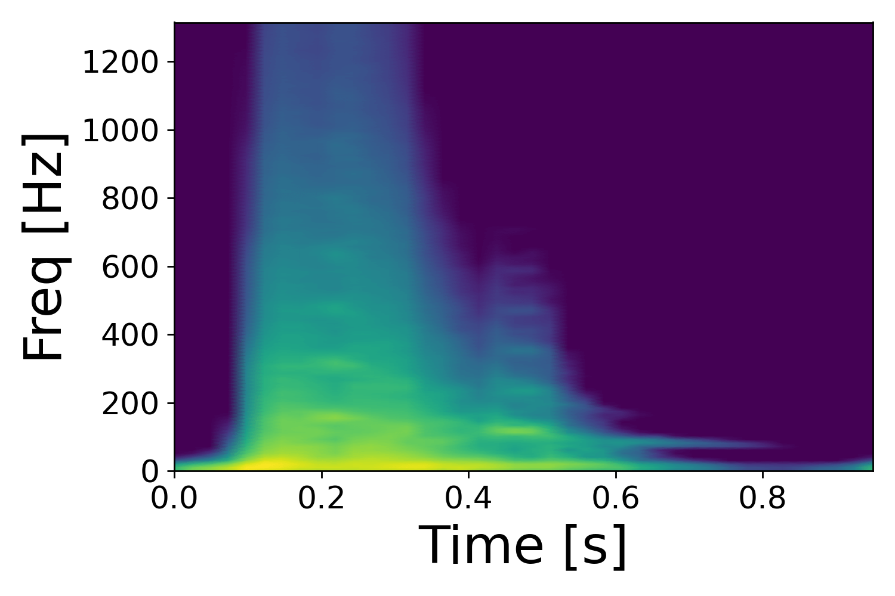
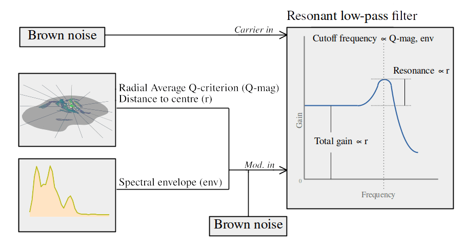
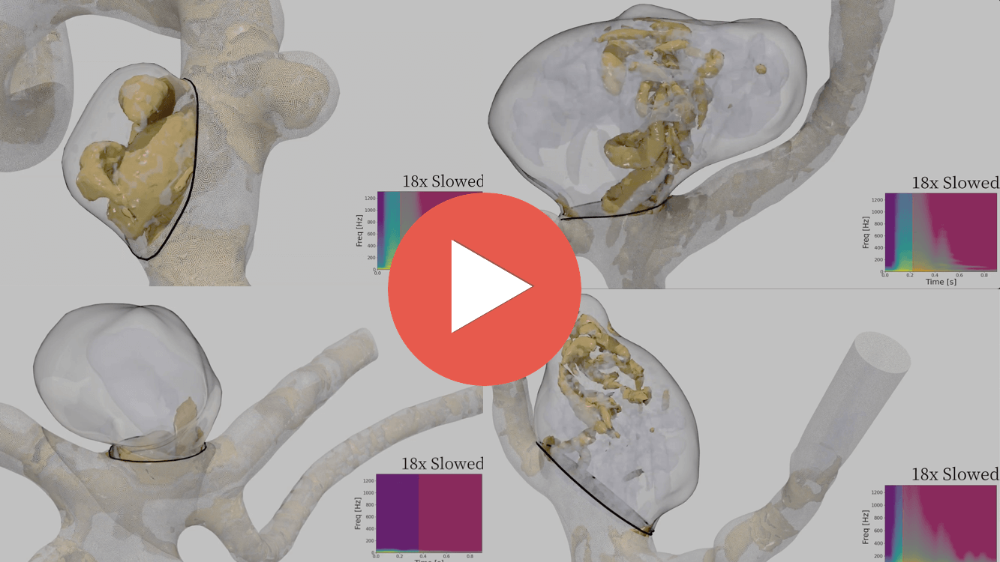

The visualization of multidimensional spatiotemporal data presents a challenging representational problem that often overlooks the strengths of the multiple sensory channels of the human perceptual system
Our interest in sonifying these data stems from our research into the use of computational fluid dynamics (CFD) for predicting cerebral aneurysm rupture
We aim to use sonification to better understand the nature of turbulent-like instabilities in our data which may have clinical relevance
Previous work has focused on developing algorithms and aesthetics but did not robustly consider how the resultant sounds were being perceived to make sense of these complex flows
The goal of this work is to apply ideas from auditory perception to create new sonifications that allow for better classification of flow phenotypes than before
Video sonification was too dependent on subjective rendering choices such as camera positions, and spatial relationships were lost.
×
2018 - Spectral analysis-resynthesis
This technique synthesized spectrograms of velocity-time data using estabished spectral analysis resynthesis techniques, analogous to a phase vocoder. It was difficult to pick out certain features in the data such as the presence of spectral harmonics. There was also insufficient temporal variation present in the sounds to communicate the presence of quasi-random fluctuations in the flow. Sounds were too similar within and/or betwen models.
Methods
Results
We took a feature-based approach, guided by the analogy of "caricature", sonifying unique features along perceptually distinct streams, informed by auditory scene analysis
We begin by computing Q-criterion (vortex cores) and the average velocity spectrogram in an aneurysm sac
Spectral features and motion from 2D Q-criterion projections are algorithmically extracted are sonified using ecological instrument models
×
CFD data
We begin by computing the average spectrogram and Q-criterion in an aneurysm sac. The spectrogram acts as a sort of "global" indicator of flow instability, and the Q-criterion communicates more localized spatiotemporal fluctuations.
×
Spectral harmonics feature
Spectral harmonics can be associated with vortex shedding flow patterns. We extract them by finding local maxima in column-wise traces of power alone the spectrogram's time axis. These bands are extracted and labelled depending on their temporal occurrence such that simultaneous harmonics are grouped together.

×
Spectral envelope feature
The envelope feature is extracted by first finding, at each time point, the largest frequency bin above a heuristic threshold.
×
2D Motion projection
The aneurysm sac and its Q-criterion isosurfaces are flattened in the direction normal to the aneurysm's ostium.
The strength and location of vortical structures are approximated by casting out 16 rays spaced at equal angles from the flattened plante's centre. Along each line we extract the average magnitude of Q-criterion and the location of the center of intersecting structures.
×
Tonal instrument
An overtone rich sawtooth synth is used to sonify each harmonic band such that vertically stacked bands will be mpaped to successive notes in a major chord. This is purely an aesthetic choice, no musical vocablary/knowledge should be needed to interpret these sounds.
Listen to the isolated instrument below
×
FM synthesis instrument model
The strength of vortical structures and their distance to the centre of the sac are used to modulate a noisy synth model that is designed to bear sound-source similarity to turbulent fluids, changing in its "buffeting" rate as more rapidly fluctuating structures are passed into it. The spectral envelope is added, proportionally controlling the cutoff of a additional instrument model.

Listen to the isolated instrument below
×
Output visualization with sonification
The tonal and buffeting sounds are mixed together and syncronized with their corresponding visualization.
In general, the current sonification allows for better detection of broadband and harmonic spectral features, as well as improved identification of finer-scale spatiotemporal fluctuations in the data

×
Results
The videos and text below will walk through the different classifications that can be made using these sonifications.
"Laminiar" vs. "Unstable" flow
Comparing the global evolution of a flow's sonic characteristics allows for this classification to be made with relative ease based on everyday listening experiences. Laminar flows (the first video below) will sound like a quick pulse with no noisy components. This is contrasted with "turbulent" flows (the second video below) which are synthesized to sound more noisy and buffeting.
"Chaotic turbulence" vs. "Vortex shedding"
Detecting the presence of harmonic featres in the sonifications can help the listener to identify whether instabilities in the flow visualizations are a result of pure "turbulence" or more pure periodic vortex shedding. The first case shows "chaotic turbulence" as we cannot hear any tonal sounds. In the second case, we can hear tonal sounds (listen for the whistling sound) which indicate the presence of spectral harmonics. When we map the presence/absence of this sound back to the visualization, we can reinforce the observation that the vortical structures in the first case appear to be far less coherent (i.e., are moving around much more randomly) than those in the second which are being periodically shed just pas the aneurysm's neck.
Differences in quasi-random fluctuations
The spectrograms for either case below are similar with respect to their envelope and harmonic features. Either case, however, seems to have quite different flow patterns. When we listen to the buffeting sounds generated in either case, this difference becomes highlighted. In the first case, we see a major large core form in the centre of the sac which appears to fluctuate and rotate in place. In the second case, as has been mentioned, we see coherent structures being shed from around the neck of the aneurysm. These differences in motion are sonically captured by the buffeting sounds generated in either case. In the first case, the periodicity of the buffeting sound seems to sync with the periodicity of the central core's rotation/fluctuation. In the second case, the periodicity of the buffeting sound seems to sync with the frequency of the shed vortices.
Discussion
Future directions
Our "carictured" approach allows for characteristic features to be interpreted quickly, while minimizing those features that are common between models
There seems to be a redundancy gain when congruency and/or causality is maintained between visualizations and sonifications
The apparant timbral differences allow for the primitive scene analysis system to partition the soifications allowing for information about features to be accessed with minimal interference
The buffeting instrument model allows for interpretation of the behavior of "turbulence" in these flows as more chaotic flows create more noisy buffeting sounds, in line with fluidic sounds that we experience in everyday listening environments
The tonal sounds can be associated with vibration/resonance (e.g., a stringed instrument or whistling wind). Similar tonal bruits have been observed in in vivo aneurysms, which we hypothesize to be associated with spectral harmonics
We have removed interactivity from our sonification pipeline for now in order to focus more on the perception of generated sounds. This could be reintegrated in the future if it is viable in clinical workflows
We have begun to observe existing cross-sensory intuitions between Q-criterion visualziations and sounds when presented to our clinical collaborator. In general some clinical users are familiar with making sense of relationships between blood flows and sound through cardiac auscultation
Future studies should elicit these existing intuitions and incorporate them into the design of sonifications and aim to more formally validation some of the theoretical speculations presented here
Ultimately, future user studies should aim to test the efficacy of these bimodal representations in clinical workflows